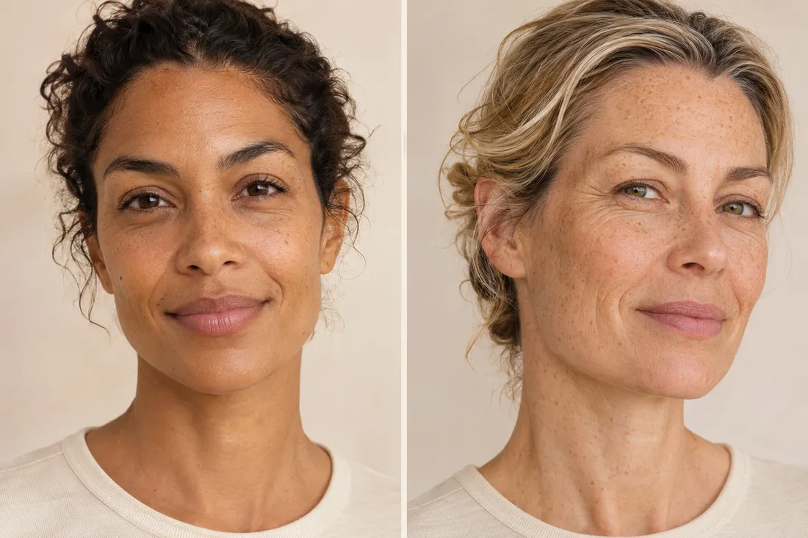

AESTHETICS
FORMA
A practice built around conversation, personal preferences and thoughtful treatment planning. Start with the people. Explore the possibilities at your pace.
Explore FORMA →Aptelum Studio · BEAUTIFULLY DESIGNED. EXPERTLY CRAFTED. THOUGHTFULLY MAINTAINED.
Explore three website directions: provider-led aesthetics, skin health, and wellness and body care. Each is an example, with fictional content and AI-generated imagery.
AESTHETICS
A practice built around conversation, personal preferences and thoughtful treatment planning. Start with the people. Explore the possibilities at your pace.
Explore FORMA →
SKIN STUDIO
Explore everyday facial care and more focused skin treatments, with clear explanations and a considered next step. A little less guesswork. More room for you.
Explore Vale →WELLNESS & BODY CARE
A welcoming place to explore wellness conversations, body-care options and restorative facial appointments. Start with what matters to you; make a plan you understand.
Explore Morrow →Send your thoughts to the person who shared this link. Mention the example and page so we can follow your experience.
Feedback can stay about the design. Please do not include patient or personal health information.